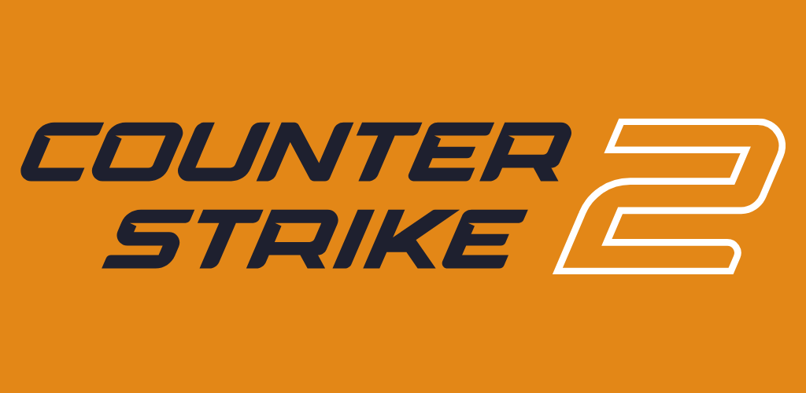
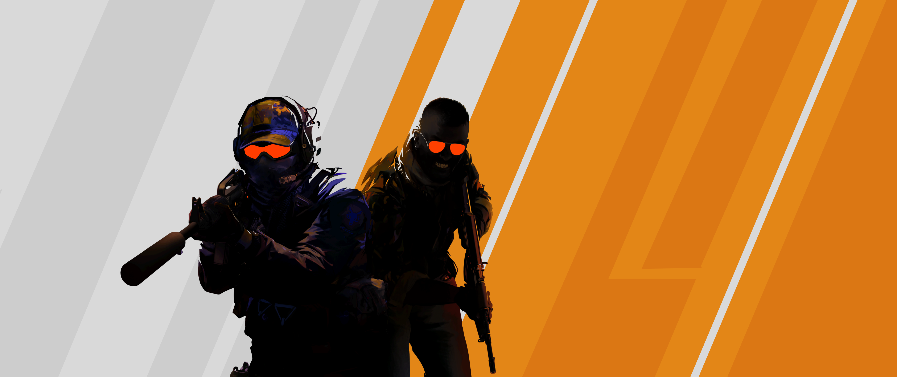

Counter-Strike 2, também conhecido como CS2, é um jogo tático multijogador de tiro em primeira pessoa anunciado em 22 de março de 2023 e lançado em 27 de setembro de 2023. Desenvolvido e publicado pela Valve, é o quinto jogo da série principal Counter-Strike. Assim como o Global Offensive, o jogo é composto por duas equipes: os Contra-Terroristas e os Terroristas, uma contra a outra em vários modos de jogo baseados em objetivos específicos dependendo do modo de jogo. Counter-Strike 2 traz várias melhorias em relação ao seu antecessor, incluindo uma mudança do motor de jogo Source para Source 2, gráficos aprimorados e uma nova arquitetura de servidor "sub-tick". Além disso, muitos mapas do Global Offensive foram atualizados para aproveitar as vantagens dos recursos do Source 2, com alguns mapas recebendo revisões completas. Após o lançamento, recebeu críticas geralmente favoráveis dos críticos. Contudo, a recepção dos jogadores foi mista; as críticas foram direcionadas à retirada do Global Offensive da Steam, ao desempenho ruim do jogo e à remoção de várias funcionalidades que estavam presentes no Global Offensive. Como resultado, Counter-Strike 2 recebeu milhares de avaliações negativas dos jogadores na Steam, tornando-o um dos títulos da Valve com a pior avaliação na plataforma
Os jogadores são divididos em duas equipes, os Contra-Terroristas (CTs) que tem o objetivo de eliminar os (TRs) e impedir que eles plante a bomba, e os Terroristas (TRs) que tem o objetivo de plantar a bomba na localidade A ou B e impedir que os (CTs) desarmem a tempo, esses são os objetivos principais no Casual e Competitivo, porém, cada equipe tem seus próprios objetivos dependendo do modo selecionado. A maioria dos modos de jogo dura várias rodadas; entre as rodadas, os jogadores podem comprar diferentes armas e equipamentos para usar. Na maioria dos modos de jogo, os jogadores têm uma única vida por rodada e, se morrerem, não poderão jogar até o início da próxima rodada.
CS2 foi desenvolvido com o motor gráfico Source 2 como uma atualização do Counter-Strike: Global Offensive (2012), e vários aspectos do Global Offensive foram atualizados para usar os recursos do motor. Além das mudanças no motor, o jogo conta com uma nova arquitetura de servidor, permitindo uma jogabilidade "sub-tick" que sincroniza com mais precisão a entrada do jogador. A nova mecânica de jogo inclui "física de fumaça" volumétrica, um recurso onde a fumaça gerada por uma granada de fumaça cresce para preencher espaços e pode ser alterada em tempo real por meio de granadas de mão ou tiros. Muitos mapas do Global Offensive receberam atualizações para aproveitar as melhorias do Source 2, incluindo nova iluminação e materiais baseados em física. A Valve criou três grupos diferentes para colocar os mapas ao reconstruí-los: "Touchstone" para mapas cujo layout não foi alterado (ex. Dust II ), "Upgrades" para mapas que receberam atualizações gráficas em grande escala com os recursos do Source 2 (ex. Nuke) e "Revisões" para mapas reconstruídos do zero (ex. Inferno). Além disso, todos os itens cosméticos do Global Offensive, incluindo skins de armas, facas e luvas, foram transferidos para o Counter-Strike 2.
